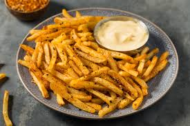

Fries Recipe

Description
My family loves seasoned fries and with 4 children the bag of fries from the store became too expensive. So I tried batter — after all, it makes chicken, shrimp, and onion rings crispy so why not potatoes! Now even my husband can't get enough of these French fries. They even stay crispy when you reheat them in the microwave.
Ingredients
- Potatoes
- Garlic
- Salt
- Onion Salt
- Paprika
- Salt
Steps
- Slice the potatoes and place them in cold water to prevent browning.
- Sift the flour and seasonings, then gradually stir in water to make a batter.
- Drain and dry the sliced potatoes, then dip in the batter.
- Fry the potatoes until golden brown and crispy.
- Mix the seasonings on a bowl.
- Toss the fries with the seasoning.